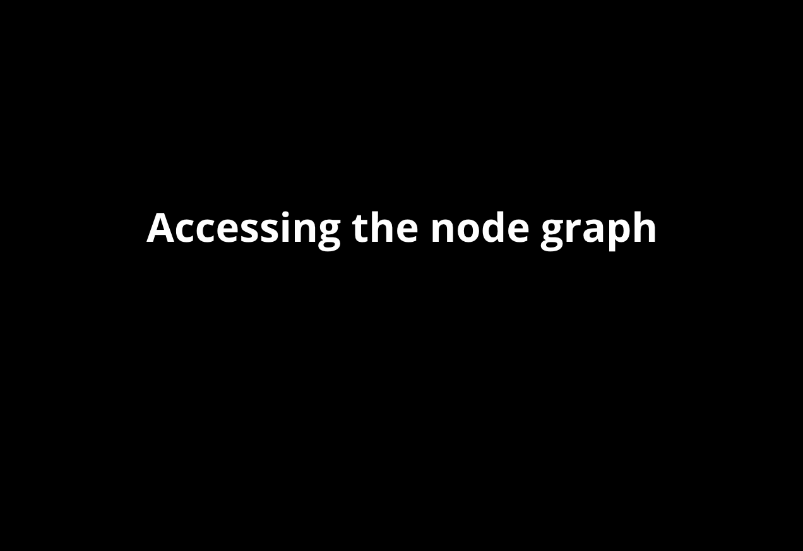
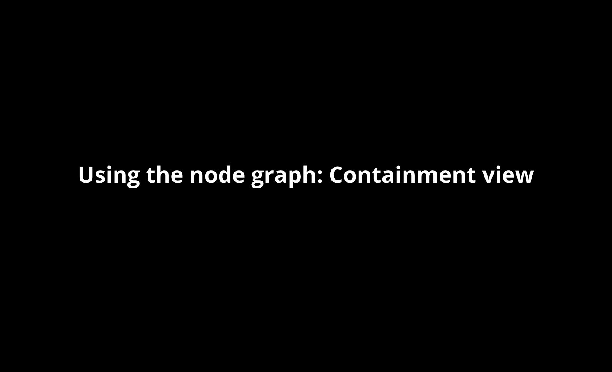
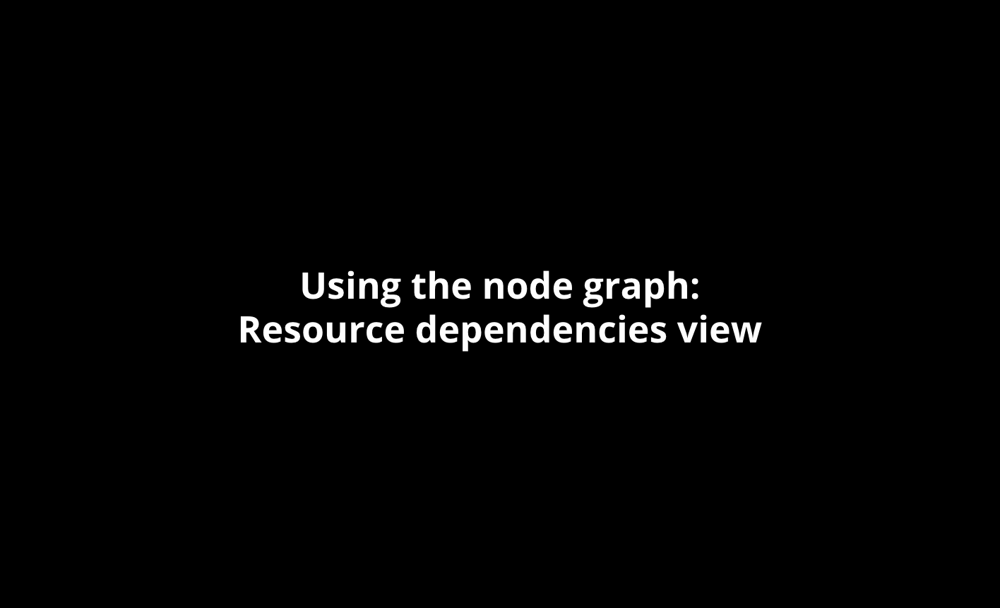

Explore your catalog with the node graph
PE’s node graph shows you the relationships between classes and resources, and lets you gain greater insight into just how the Puppet master compiles your Puppet code and ships it to a Puppet agent.
The node graph displays a node’s catalog (as of the last Puppet run) as an interactive visual map. The graph shows the desired state for each resource that PE manages, as well as each resource’s status as of the last run, and helps you understand the dependencies between resources. It also allows you to visually identify complexity you may not need, and problematic dependencies that need your attention.
Note: Corrective changes are currently not reported on the node graph. Support for this feature will be added in a future release.
View the node graph
To access a node’s graph, navigate to the Overview page of the PE console’s Configuration section. Click the name of the node you wish to view, and then click Node graph in the dropdown menu.

Alternately, access the node graph by selecting a node name on the Inventory page in the Nodes section. Click the View node graph link that appears at the top of the node detail page.
Note: If you upgrade to PE version 2016.4 or later from version 2015.3 or earlier, the node graph is unavailable until a Puppet run is completed on the upgraded node.
Visualize resource and class relationships
When the node graph opens, you’ll see the containment view, which presents the catalog in its entirety. This can be a bit overwhelming, but you can use the Filter box to quickly focus on the classes or resources you’re interested in. Apply filters to search for specific objects or filter by event status or tag. You can also explore the graph by simply scrolling, zooming, and clicking on objects.

When you select a specific resource, the graph repositions to zoom in on the selected item and the detail pane opens. The detail pane contains additional data on current event status, as well as the object’s source file, code line number, relevant tags, and class containment information.
Investigate dependencies
If your resource is part of a dependency chain, the Resource dependencies view button is activated (this view remains inactive for resources without any dependencies).

Click this button to view the dependency relationships between the selected resource and other resources. The detail pane in this view provides further details on ancestor and dependant relationships between linked resources.
In the event that a dependency cycle is detected, PE issues a cycle warning message.
How the node graph can help you
The node graph is an ideal tool for:
- Gaining greater insight into your PE deployment.
- Visualizing the relationship of resources on your nodes.
- Diagnosing dependency loops and viewing all impacted resources.
- Helping new users to understand relationships among classes and resources in their Puppet catalog.
- Understanding defined resource types as they are deployed across your configuration.
- Understanding the content of modules.